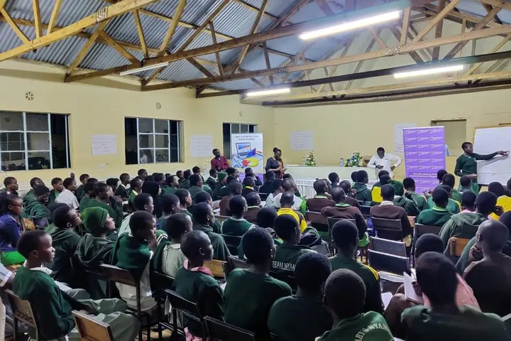

Africa Maths Initiative, volunteer
Education
Hands-on, gamified maths camps for learners across East Africa, with evaluation built in from the start.
- Designed and facilitated gamified maths lessons at residential and community camps
- Built baseline and endline tools, analysed the data and contributed to camp reports
- Co-authored two maths camp papers and presented the AMI camps at AFRICME7